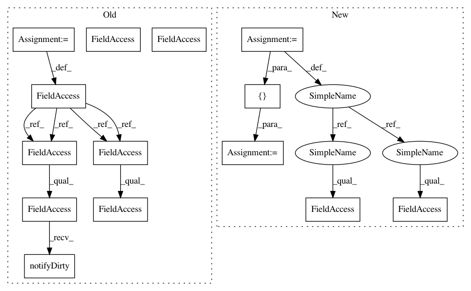

67821786e77fdfe3e907971f6fb18ae652fa11d4,ilastik/applets/batchIo/batchIoSerializer.py,BatchIoSerializer,__init__,#BatchIoSerializer#Any#Any#,22
Before Change
def __init__(self, mainOperator, projectFileGroupName):
super( BatchIoSerializer, self ).__init__( projectFileGroupName, self.SerializerVersion )
self.mainOperator = mainOperator
self._dirty = False
def handleDirty():
self._dirty = True
self.mainOperator.ExportDirectory.notifyDirty( bind(handleDirty) )
self.mainOperator.Format.notifyDirty( bind(handleDirty) )
self.mainOperator.Suffix.notifyDirty( bind(handleDirty) )
def handleNewDataset(slot, index):
slot[index].notifyDirty( bind(handleDirty) )
// DatasetPath is a multi-slot, so subscribe to dirty callbacks on each slot as it is added
self.mainOperator.DatasetPath.notifyInserted( bind(handleNewDataset) )
def _serializeToHdf5(self, topGroup, hdf5File, projectFilePath):
// Delete any datasets we"re about to write
After Change
SerializerVersion = 0.1
def __init__(self, operator, projectFileGroupName):
slots = [
SerialSlot(operator.ExportDirectory, default=""),
SerialSlot(operator.Format, default=ExportFormat.H5),
SerialSlot(operator.Suffix, default="_results"),
SerialDatasetPath(operator.DatasetPath,
operator.Dirty,
name=("datasetInfos", "dataset{:>04}")),
]
super(BatchIoSerializer, self).__init__(projectFileGroupName,
self.SerializerVersion,
slots=slots)
In pattern: SUPERPATTERN
Frequency: 3
Non-data size: 14
Instances
Project Name: ilastik/ilastik
Commit Name: 67821786e77fdfe3e907971f6fb18ae652fa11d4
Time: 2012-11-27
Author: kemal.eren@iwr.uni-heidelberg.de
File Name: ilastik/applets/batchIo/batchIoSerializer.py
Class Name: BatchIoSerializer
Method Name: __init__
Project Name: ilastik/ilastik
Commit Name: 67821786e77fdfe3e907971f6fb18ae652fa11d4
Time: 2012-11-27
Author: kemal.eren@iwr.uni-heidelberg.de
File Name: ilastik/applets/batchIo/batchIoSerializer.py
Class Name: BatchIoSerializer
Method Name: __init__
Project Name: ilastik/ilastik
Commit Name: 67821786e77fdfe3e907971f6fb18ae652fa11d4
Time: 2012-11-27
Author: kemal.eren@iwr.uni-heidelberg.de
File Name: ilastik/applets/pixelClassification/pixelClassificationSerializer.py
Class Name: PixelClassificationSerializer
Method Name: __init__
Project Name: ilastik/ilastik
Commit Name: 67821786e77fdfe3e907971f6fb18ae652fa11d4
Time: 2012-11-27
Author: kemal.eren@iwr.uni-heidelberg.de
File Name: ilastik/applets/thresholdMasking/thresholdMaskingSerializer.py
Class Name: ThresholdMaskingSerializer
Method Name: __init__